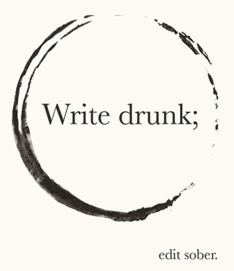

From time to time I my life warps and distorts and I manage to get myself stuck in a loop: go to bed at 9am, wake up at 4pm, spend the rest of the "day" coding, listening to music and chatting with people.
I guess this behavior is also enabled by the fact that nothing much happens during my new sleep hours; let's be honest here, most normal people are either at work or school during that interval, or it's too early for the US denizens to be online, so starting the day at 4pm actually makes sense, in a weird and twisted way, not to mention the fact that I love the night and the tranquility it brings. There's nothing like looking outside at the darkness, counting the few passing cars between writing lines of code. Maybe it's a bit too romanced but night seems to be the time of day when I manage to focus the best.
I also find myself procrastinating a whole lot more than before, despite being more productive than I've been in ages; what's even weirder is that procrastination takes the form of reading: I've slowly started to read again, and to my huge surprise actually devoured a book in only two nights between coding sessions.
This might also have something to do with the book, Ready Player One by Ernest Cline, a book aptly defined as nostalgia porn1, built around a contest deeply connected to all things 80s geek, set in a virtual world, filled with danger and mistery. I actually read it as a sort of Neverending Story for the inner-geek and will most likely go through it again after watching the movies it quoted that I've, to my dire shame, missed. In any case, you can find my review of the book, and trust me, you'll love this book regardless of your views on geekdom, the 80s and fantasy stories.
But I digresss, so let's get back to the unknown thing I was trying to write about.
The main reason I love coding is because it's a perfect form of escapism: what better way to escape a life you're not really thrilled with, at least at this current point, than to know that you have absolute control, which is what code gives you. You are the one manipulating the world under your fingers, in a much more personal and direct way than just playing a computer game, for example; everything that happens is a direct consequence of your actions and everything is self-reliant and safe from outside influences. Put it simply, there's no one else to blame for the shit that happens except yourself.
And escapism is the thing I need most dearly right now, despite not really being able to afford it. Why is that? Because every time I'm stuck in this loop things tend to start deteriorating: I get less and less sleep, neglect eating, my social interactions start to suffer (despite being online 99% of the time I'm awake), and then eventually I'll start losing my focus.
Now, losing focus is a bit of a fortunate event during this time, because it means I'll start becoming more and more frustrated with my mistakes and reach a point where I'll either give up, break the pattern and return to a normal life by most standards, or I'll become even more ambitioned and plow my way through what I have to get done.

If you reached this point in the article I congratulate you, and thank you for being stoic enough to put up with my drivel.
For me though it's time to call it a night, or at least try to.
There are comments.